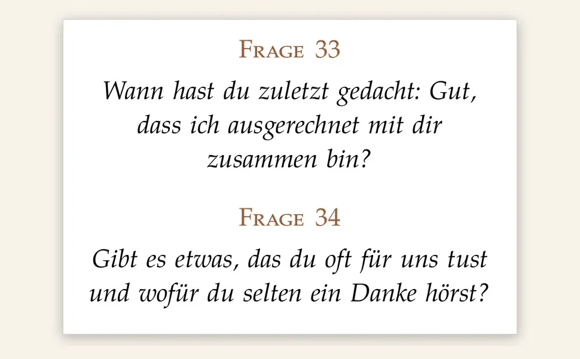

Zwischen Alltag und uns
140 Gesprächsfragen für Paare, die im Alltagstrubel wieder mehr voneinander erfahren wollen.
Öffnet amazon.de in einem neuen Tab.
Wann habt ihr zuletzt geredet – ohne über den Alltag zu sprechen?
Im Alltag redet ihr viel miteinander: wer die Kinder holt, wann der Handwerker kommt, ob noch Milch da ist. Dieses Buch ist für die Gespräche dazwischen. Es hat kein Programm und keine Hausaufgaben, sondern Fragen, die ihr euch gegenseitig stellt, zum Beispiel abends auf dem Sofa, beim Spaziergang oder auf einer langen Autofahrt. Jede Frage darf übersprungen werden, ohne Begründung. Ihr könnt vorn anfangen, ein Kapitel nach Laune aussuchen oder das Buch einfach irgendwo aufschlagen. Eine Paarberatung ersetzt es nicht, und eine tiefe Krise lösen kann es nicht. Es kann Gespräche anstoßen.

Blick ins Buch: Zwei Fragen aus Kapitel drei, „Was ich an dir sehe“
Die neun Kapitel reichen vom Alltag über Erinnerungen, Wertschätzung, Nähe und faire Konflikte bis zu Wünschen, Zukunft, Lachen und besonderen Tagen. Jedes beginnt mit einer kurzen Einleitung, alle Fragen sind durchnummeriert. Am Ende jedes Kapitels steht eine kleine, freiwillige Aufgabe für euch zwei. In Kapitel drei zum Beispiel legt ihr euch gegenseitig kleine Zettel hin, auf denen steht, was ihr am anderen mögt. Wühlt eine Frage einen von euch stark auf, gilt die Stopp-Regel: Ihr hört auf und redet weiter, wenn ihr beide wieder ruhig seid. Hilfsangebote stehen im Anhang. Im Taschenbuch steht jede Frage groß und mittig mit ihrer Nummer, meist zwei auf einer Seite.
Vier Ideen aus dem Buch für euren Alltag
Abends kurz ohne Handy
Eine Woche lang liegen eure Handys jeden Abend eine feste, kurze Zeit in einem anderen Raum. Jeder erzählt kurz das Beste und das Blödeste seines Tages. Mehr nicht.
Ein altes Foto von euch
Ihr sucht ein altes Foto von euch heraus. Jeder erzählt, was er von diesem Tag noch weiß, und der andere unterbricht nicht. Danach vergleicht ihr eure beiden Versionen.
Drei kleine Dinge
Jeder nennt drei kleine Dinge, die ihm guttun und schnell gehen, etwa eine Tasse Tee ans Bett. Jeder sucht sich eins davon aus und schenkt es dem anderen, ohne vorher darüber zu reden.
Eure eigenen Streitregeln
Ihr schreibt zusammen drei Regeln auf einen Zettel, die für euch beide gelten, zum Beispiel: „Wir gehen nicht wortlos aus dem Raum, sondern sagen, wann wir weiterreden.“ Den Zettel hängt ihr an eine Stelle, die nur ihr zwei kennt.
Dieses Buch ist ein Ratgeber und kein Ersatz für eine Therapie oder Beratung. Wenn es dir gerade richtig schlecht geht, hol dir bitte Hilfe, zum Beispiel bei der Telefonseelsorge unter 0800 111 0 111 (kostenlos, rund um die Uhr).
Öffnet amazon.de in einem neuen Tab.